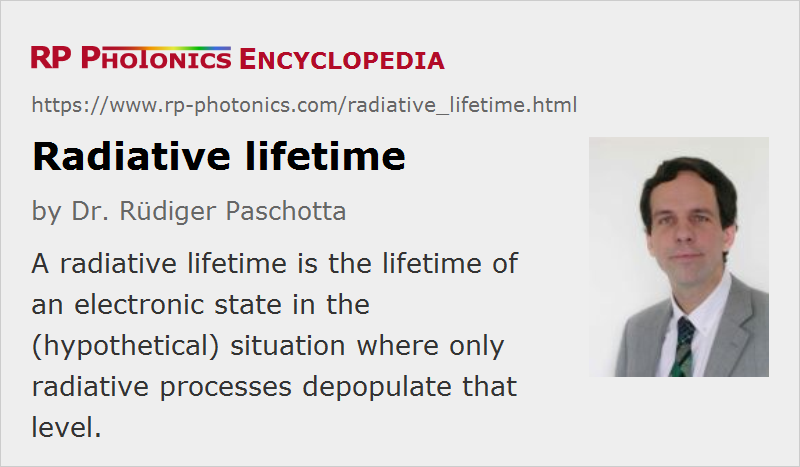

Radiative Lifetime
Definition: lifetime of an electronic state in the (hypothetical) situation where only radiative processes depopulate that level
German: radiative Lebensdauer
Category: physical foundations
Formula symbol: τrad
Units: s
How to cite the article; suggest additional literature
Author: Dr. Rüdiger Paschotta
The radiative lifetime of an excited electronic state e.g. in a laser gain medium is the lifetime which would be obtained if radiative decay via the unavoidable spontaneous emission were the only mechanism for depopulating this state. It is given by the equation
which shows that high emission cross sections and a large emission bandwidth inevitably lead to a low radiative lifetime. This is because the cross sections describe not only the strength of stimulated emission but also that of spontaneous emission. The derivation of this equation is based on an equation for the mode density of free space, as is also used e.g. for the derivation of Planck's law for the power spectral density of thermal radiation. This means that the equation does not hold in microcavities (as often used in experiments on quantum electrodynamics), because such cavities can substantially modify the mode density.
Note also the influence of the refractive index via the mode density. If fluorescence lifetime measurements are done using a powder with a grain size well below the wavelength of light, the refractive index of the ambient medium (rather than that of the powder grains) becomes relevant. For example, the upper-state lifetime measured for powder in air can be longer compared with that for solid crystals. Such observations should not be misinterpreted as evidence for quenching effects in crystals.
Another important aspect is that a shorter mean wavelength of the emission implies a shorter radiative lifetime. This results from the increased mode density of the radiation field. A consequence is that ultraviolet lasers tend to have a higher threshold pump power than e.g. infrared lasers.
As the gain efficiency of a laser medium is (in simple cases) proportional to the product of the maximum emission cross section and the upper-state lifetime (the σ−τ product), lasers based on broadband gain media have a higher threshold pump power.
The actual lifetime of an electronic level can be lower than the radiative lifetime, if non-radiative quenching processes also significantly depopulate the level. This means that the quantum efficiency of the transition is below unity.
If the quantum efficiency is known to be close to unity, the above equation can be used for obtaining the absolute scaling of emission cross sections, the wavelength dependence of which is already known from the shape of the emission spectrum (→ Füchtbauer–Ladenburg equation). In other cases, where the scaling of emission cross sections is known (e.g. obtained from absorption ]cross sections] via the reciprocity method), the quantum efficiency of the fluorescence can be obtained by comparing the calculated radiative lifetime with the upper-state lifetime.
Questions and Comments from Users
Here you can submit questions and comments. As far as they get accepted by the author, they will appear above this paragraph together with the author’s answer. The author will decide on acceptance based on certain criteria. Essentially, the issue must be of sufficiently broad interest.
Please do not enter personal data here; we would otherwise delete it soon. (See also our privacy declaration.) If you wish to receive personal feedback or consultancy from the author, please contact him e.g. via e-mail.
By submitting the information, you give your consent to the potential publication of your inputs on our website according to our rules. (If you later retract your consent, we will delete those inputs.) As your inputs are first reviewed by the author, they may be published with some delay.
See also: upper-state lifetime, quantum efficiency, quenching, Füchtbauer–Ladenburg equation
and other articles in the category physical foundations
|  |
If you like this page, please share the link with your friends and colleagues, e.g. via social media:
These sharing buttons are implemented in a privacy-friendly way!